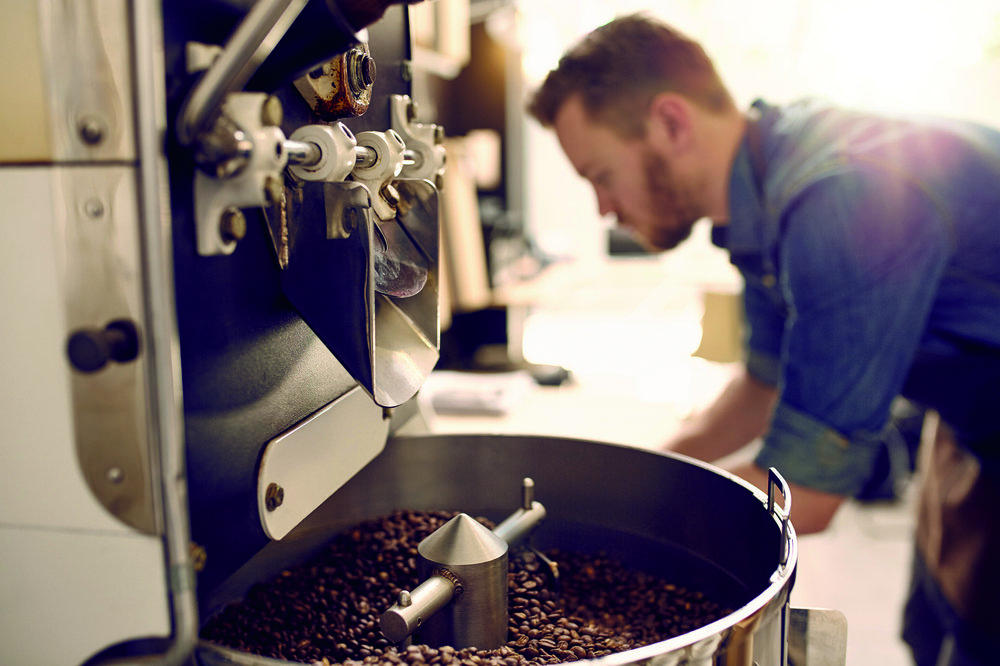

Nuestra historia

Empezamos desde chicos aprendiendo de nuestros abuelos que todas las mañanas preparaban el café, el abuelo tostaba el café y la abuela lo molia. A veces hacian el café filtrado, otras veces hacian en la cafetera italiana, pero el café en esa casa era infaltable.
Ese ritual lo heredamos Tito y yo (Fede), empezamos a tostar en casa, probando diferentes métodos, con mucho esfuerzo compramos nuestra primer tostadora y con mucho amor como los abuelos, arrancamos este proyecto y esperamos que nuestro café les traiga recuerdos de su infancia como a nosotros.